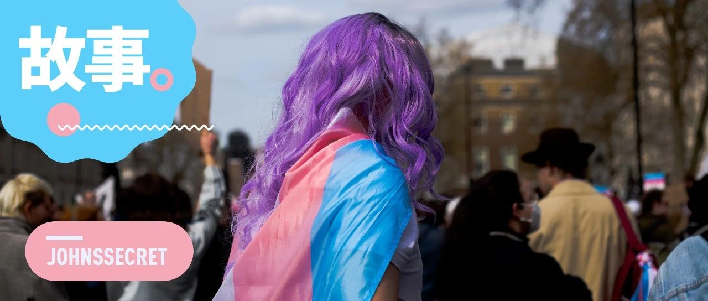

国际跨性别者现身日：从内耗逃避，到勇敢表达
原创
宛潼
约翰斯库
2023年03月31日 22:17
中国香港
其实我很愧疚，第一次知道 3 月 31 日是「国际跨性别者现身日」，也就是在去年。如今一年荏苒，又是三月的最后一天。
我算是跨性别者中幸运的一员，从性别意识的觉醒到以女性的身份去生活，再到后来接受激素治疗、和所有人出柜公开自己的身份，按部就班却又安全地走过了一道又一道坎。
我拥有着一个除却声音之外还算是 Pass 的外表，明显的腰线和微微发育的乳房：我可以穿得性感，也可以穿得温婉。我没有经扭转治疗，也没有经历过太多职场歧视和性骚扰，尽管也曾质疑和怀疑过自己，但最终还是决定保护好内心真实的她。
可是性感的服饰下，掩盖着一些无法言说的过去。无处不在的孤独和伤痕累累躯体似乎是永远不会离开我的伙伴，不停地折磨着我并不算强大的内心。
自我怀疑、自我否定和自我逃避，让我在六七年的时间里要用别的词为我的跨性别女性身份打掩护，生怕暴露一点点真实的自己。直到后来终于积攒了一些勇气，觉得自己不想也不能再这样下去，才忐忑地在满是荆棘的无知中开始寻找自己的路。
纵使获得医生与大部分的朋友肯定与支持，但却也还是经历了「你连手术都没做，在这里骗谁」的绝交，经历了投简历石沉大海最终在追问之后换来一句「您的身份暂不符合我们要求」的拒绝，也经历了在春节的家里发疯，想要拿刀割伤自己来和父母证明「我真的没有在和你们开玩笑」的创伤。
如今回看起来，这些场景是多么的荒诞，可它又确确实实地发生在我的生命经历中。
被强烈排斥、被他者化、陷入无止境的内耗，仿佛就是跨性别者的宿命和注定要捱过的苦难，否则你就无法成为一个「人」。
久而久之，与这些近乎无法愈合的伤口相比，生活中那些被 misgender（错认性别）的时刻，仿佛都变得不那么刺痛了。每当别人对我问出「你是男生还是女生」这样的问题，甚至还让我产生了一丝安慰 —— 你看啊，我还是在一定程度上「欺骗」到了他们，不是吗？
这个世界是为异性恋和二元性别所构造的，当我试图去跳脱这个框架的束缚和规训时，那些无法被解决的问题便朝我不停涌来。
就像是厕所问题，永远都会引发无休止的争吵。在这个泾渭分明的性别空间里，似乎容不得一个不遵循这套规则的人。
尽管世界有在变好，第三性别厕所、无障碍厕所越来越多地出现在身边，让我可以有选择，但它们却并没有想象中那样地「友好」。甚至于我在深业上城这样高档的购物中心，使用残疾人洗手间后，仍会招来保洁阿姨的质疑和训斥。
她说，「你看着也不像残疾人，为什么要去用这个厕所？」
我和阿姨坦白了我的困难，不想因为自己的身份给其他使用厕所的人带来麻烦。但在她的世界里，并没有我这类人的选项。
「那你就去男厕所啊。」
多说无益，我也就只等朋友出来之后，头也不回离开。
而在广州南站，我的胃已经在翻江倒海，却也不得不等待有且仅有一个位置的无障碍厕所。
当等待的愤怒和焦躁化作肉体的疼痛，只能在内心哀求里面的人赶紧出来。
后来，我的朋友 Luna 从厕所出来之后和我说，你直接去女厕就好了呀，不要再等了。可我总觉得自己迈不过这道坎，于顺性别女性而言，我能理解她们的担忧，而对跨性别女性来说，我也不想因为这事给自己和整个群体招来麻烦。
「没事儿的，你直接进去上就好了。加油！」，Luna 和我说。
来自朋友的充分信任让我感到慰藉，因为她们知道我不会干出那些事来。可我并不能要求所有人都如此，我也不指望被异性恋和二元性别霸权规训的大多数人能够如此。
其实，很多问题只需要多建一个空间就可以。然而自诩为「多数人」的他们，又怎么会考虑一个微弱个体的需求？在成本与人性的天平上，后者经不起考验。
某种意义上来说，我们也或多或少也是「残障人士」。「有缓坡的马路牙子」和「随时能上厕所」，在如今高度发达的现代文明城市，竟然变成了一种奢望。
海南万宁巴厘村的「Unisex Restroom」
作为一个舶来词，「跨性别」在大众心目中所默认的样子几乎就是「变性人」，像是金星那：做了性别重置手术，再找一个异性恋结婚，养几个孩子。
在他们眼中，这才是努力生活的「正常人」，而你怎么可以保留了第二性征器官和声音的同时，宣称自己是另一个性别的人？
这是我这种并不是那么追求「Pass」，而是走向 Queer 的人，在现实生活中永远无法绕过去的一个难题。
也是 3 月的一个夜晚，我去楼下扔垃圾的时候，一个路过的小女孩突然和我打招呼，而我却因为自己的声音不敢回应她。然而正当她和我擦肩而过，她望着我的粉色头发说：
好美啊。
这一刻我的内心是受到极大冲击的。
自从我出柜之后，我就不停地向父母去证明，我选择这样去生活，也会有很多人夸我美，也会有人爱我。而他们每次反驳我的观点也如出一辙，别人说的只是客套话和讨好，只有我们才会爱你。
小女孩这一句无意中的夸赞，瞬间让意识到，他们的反驳是如此充满着控制欲。而我过去这么努力去向他们证明「我会被爱」，恰恰是徒劳且无力的。
在家听 Girl in Red
可是在这种赞美之后，再回到家后却又再次被痛苦所淹没，以致于在洗澡的时候忍不住大哭。
我也好想和她打招呼呀，我也不是什么怪物，我多想亲口对她说声谢谢，也夸她好美。
可是现在的我却觉得我做不到。
我害怕我的声音吓到她，也害怕我会被她在附近的亲人当做是什么样不怀好意的人，给她给自己又招来不必要的麻烦。
我不害怕也恨透了那些自以为是的人的审视、质疑和谩骂，可对于这种温柔却又无力的处境感到无可断绝的悲伤：当我已经在开始努力尝试去改变这些现状的时候，发现要做的第一件事，竟然还是去顺应那些陈腐的规则。
否则，我面临的很可能就是来自所谓「正常人」的猛烈质疑与批判，「凭什么让我们听你的？」
在眼泪与水流一同落下的那个瞬间，我又开始想要那些曾经被我认为是刻板的东西，我想要乳房，想要长发，更对拥有女性的声音这件事有了巨大的渴望。
哪怕我向这个样子靠近了一点点，是不是就会有多一个人愿意听我说话，是不是就会多一个人理解，跳出性别二元并不是一件不可想象的事？
奇点计划里的一只阴唇蜗牛
我记得，很多选择去泰国进行性别重置手术的经历分享中，都会用「蝶变」来形容这个过程。
多么美丽却又撕心裂肺的一个词。
生物学上的一些定义，借用到人间往往就带有了无比讽刺的意味。变态是幼虫在暗无天日的茧中经历痛苦为成为美丽蝴蝶的过程，却也是父母和一些人对我的评价。
而且，那些没有蝶变成功，甚至还没有开始蝶变就死去的昆虫也不在少数啊。
2023 年到来的那一天，我总觉得自己今年需要做些什么，尽可能去帮到一些人。所以我写了那篇《给所有人的出柜指南》，也想做个播客，或者视频。
我想要不停地表达，而我的身份、社群和生命体验，都是我不会枯竭的创作源泉。
记得在一次关于我的人物视频策划上，有人提起来，我如此强调我的跨性别身份标签，会不会也是一种比较功利的想法？
我说，我现在就是想要功利一些。我要大声地说，我就是一位跨性别女性。
我想要赚钱，我想要赚好多钱，从那些「正常人」身上赚钱，即便这也是在顺应他们的规则。因为我希望有一天可以开一家没有性别歧视的公司，欢迎所有 LGBTQ、残障人士、女性和一切少数人群的朋友来这里上班，让他们也变得有钱，然后一批又一批地传递下去。
多多少少我也算是一个过来人，但我不想后面和我一样的孩子们再走一遍我要经过的蜿蜒崎岖。挫败无时不在，可这不是我们的错，所以我要勇敢地站出来表达，发现问题并影响身边的朋友，一定会让一些东西慢慢变好。在这个过程中每帮助到一个人，对我来说就是一件非常有意义的事情。
还记得，去年在豆瓣上收到过的来自一位香港跨性别女性的母亲的私信。她一开始也为此感到迷茫和痛苦，但在和她对聊得过程中，我感受到她开始渐渐地理解了自己孩子的选择。
「她在这个世界上生活已经很艰难了，如果你们都不能理解她，那么她真的会很难过很痛苦的。」，我说。
直到后来有一天，她又找到我，问我大陆有没有好的面部女性化手术医院和医生推荐 —— 她决定成为女儿在改变自己路上的守护者了。
那一刻，感动与心酸一并喷涌。去年的 4 月，刚经历出柜的我还处在与父母僵持在冰点状态，而在不远的另一头，那个女孩终于获得了来自父母的理解和帮助。
而那个母亲留给我的最后一句话是，
宛潼，姐姐祝你早日化茧成蝶啦！虽然成为女性真的很难，但姐姐相信宛潼会是一个做好了准备的女孩。
2022 年的 3 月广州在下着雨，今年亦是如此。从 3 月中旬开始算起，广州的雨已经下了一周 —— 仿佛每年的这段日子，都是阴雨绵绵。
但即便此刻还是漫长不见太阳的日子，雨也总会在约定好的一天结束，等待春天伴随着和煦的阳光如期而至。